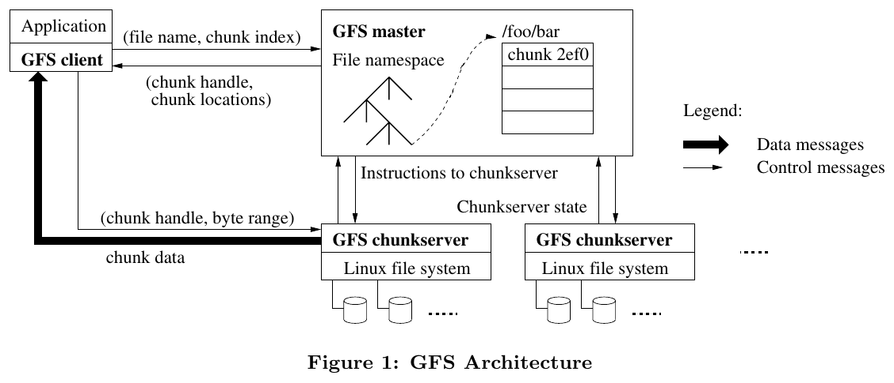
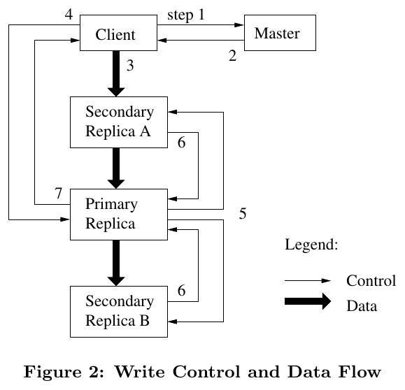
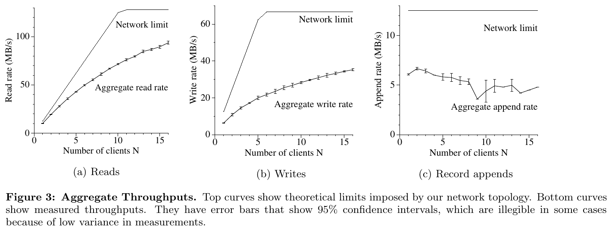
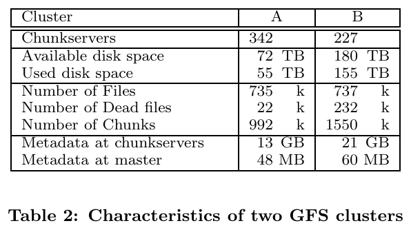
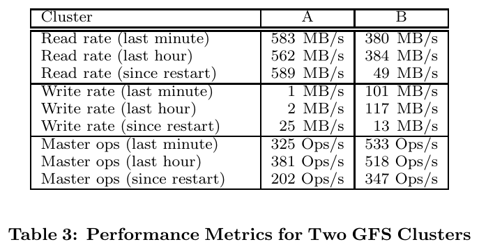
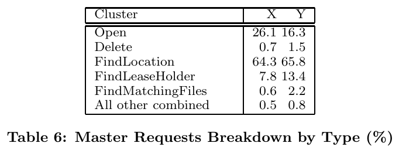

Vì sao Hadoop ra đời, và HDFS giải quyết bài toán gì
Vì sao Hadoop ra đời, và HDFS giải quyết bài toán gì
Hadoop không phải một sản phẩm được thiết kế trong phòng họp — nó ra đời từ nhu cầu rất cụ thể của một công cụ tìm kiếm mã nguồn mở đang chết dần vì không mở rộng được.
Từ Nutch tới Hadoop: một câu chuyện có thật
- 2002: Doug Cutting & Mike Cafarella xây Nutch — công cụ tìm kiếm mở, nhưng kiến trúc không scale
- 2003-2004: hai bài báo của Google (GFS, MapReduce) chỉ ra lối ra
- 2006: Cutting vào Yahoo, phần lưu trữ+xử lý của Nutch được tách ra, đặt tên Hadoop
- Hadoop không phải sản phẩm của 1 công ty — nó là mô hình mã nguồn mở điển hình
Nutch: công cụ tìm kiếm sinh ra Hadoop

🗣️ Nói nôm na: giống như một nhóm sinh viên tự viết phần mềm quản lý thư viện cho trường mình, rồi nhận ra trường càng đông, chương trình càng ì ạch — cho tới khi đọc được 2 bài hướng dẫn "cách Google quản lý thư viện khổng lồ của họ" và quyết định viết lại từ đầu theo cách đó.
Trước khi có Hadoop, Doug Cutting và Mike Cafarella đã xây Apache Nutch (2002) — một công cụ tìm kiếm web mã nguồn mở. Vấn đề: muốn thu thập và đánh chỉ mục cả Internet, Nutch cần lưu trữ và xử lý dữ liệu ở quy mô vượt xa khả năng một máy chủ, nhưng chưa có kiến trúc phân tán phù hợp.
Đây là chi tiết quan trọng để hiểu vì sao Hadoop có 2 trụ cột tách biệt (lưu trữ HDFS + xử lý MapReduce) — vì chính 2 bài báo Google mà Cutting/Cafarella đọc cũng tách biệt 2 vấn đề đó.
| Thời điểm | Sự kiện |
|---|---|
| 2002 | Nutch ra đời — công cụ tìm kiếm mở, chạy được nhưng không mở rộng được khi dữ liệu lớn |
| 10/2003 | Google công bố paper GFS — mô hình lưu trữ phân tán cho dữ liệu khổng lồ |
| 2004 | Google công bố paper MapReduce — mô hình xử lý song song đơn giản hoá |
| 01/2006 | Phần lưu trữ + xử lý của Nutch tách ra thành dự án con Hadoop, Cutting gia nhập Yahoo! |
Nguồn gốc cái tên "Hadoop"
🗣️ Nói nôm na: không có ý nghĩa kỹ thuật gì cả — giống việc một công ty đặt tên sản phẩm theo tên con mèo của người sáng lập, miễn là cái tên dễ nhớ và chưa ai dùng.
Chi tiết này không phải giai thoại vô bổ: nó cho thấy văn hoá đặt tên "ngắn - dễ nhớ - không gây hiểu lầm về công nghệ" của cả hệ sinh thái Hadoop sau này (Pig, Hive, ZooKeeper, Oozie, Sqoop... đều là tên vật/khái niệm đời thường, không phải từ viết tắt).
Vì sao mã nguồn mở là điều kiện bắt buộc, không phải lựa chọn phong cách
🗣️ Nói nôm na: giống việc nhiều trường đại học cùng góp sách vào 1 thư viện chung, thay vì mỗi trường tự xây 1 thư viện riêng — ai cũng được dùng, ai cũng có thể đóng góp sửa lỗi/thêm sách.
Google KHÔNG công bố mã nguồn GFS/MapReduce — chỉ công bố Ý TƯỞNG qua 2 bài báo khoa học. Cutting/ Cafarella phải tự viết lại toàn bộ từ đầu dựa trên ý tưởng đó. Việc Hadoop sau đó được đưa vào Apache Software Foundation (mã nguồn mở, miễn phí, ai cũng sửa/đóng góp được) là lý do nó lan rộng nhanh hơn bất kỳ hệ thống thương mại đóng nào ở cùng thời điểm.
| Ngành | Ví dụ tương tự "mô hình mở" so với "đóng" |
|---|---|
| Y tế (minh hoạ) | Phác đồ điều trị công khai trên tạp chí y khoa (ai cũng áp dụng, phản biện được) so với công thức thuốc độc quyền 1 công ty giữ kín |
| Giáo dục (minh hoạ) | Giáo trình mở (OpenCourseWare) nhiều trường cùng chỉnh sửa, so với giáo trình nội bộ chỉ 1 trường được dùng |
| Nông nghiệp (minh hoạ) | Giống lúa lai được công bố quy trình lai tạo cho nông dân tự nhân, so với giống độc quyền chỉ 1 công ty bán hạt giống |
Đọc trực tiếp bài báo Google File System (SOSP 2003): từ giả định thiết kế tới HDFS
- Bốn quan sát về khối lượng công việc của Google dẫn tới toàn bộ thiết kế GFS
- Hình gốc kiến trúc: 1 master + nhiều chunkserver; client không bao giờ đọc/ghi dữ liệu qua master
- Luồng ghi: lease 60 giây, pipeline dữ liệu, thứ tự do primary quyết định
- Hot spot, nhân bản lại có ưu tiên, trải bản sao qua các rack: những chi tiết HDFS thừa hưởng
Bài báo GFS: bốn quan sát về khối lượng công việc dẫn tới cả thiết kế

🗣️ Nói nôm na: trước khi xây nhà kho, người thiết kế hỏi hàng hoá thực tế là gì: pallet nặng hay gói nhỏ lẻ, ai lấy hàng, bao lâu có một xe hỏng. GFS làm đúng như vậy: nhóm tác giả không thiết kế một hệ file "hoàn hảo" nói chung, mà thiết kế cho đúng 4 quan sát về công việc của Google, kể cả khi 4 quan sát đó đi ngược lại giả định của các hệ file cũ.
| Quan sát trong bài báo | Quyết định thiết kế | Dấu vết ở HDFS |
|---|---|---|
| Hỏng hóc là chuyện thường: hàng trăm tới hàng nghìn máy rẻ tiền, luôn có máy đang hỏng | Giám sát liên tục, phát hiện lỗi, tự phục hồi, mỗi chunk có 3 bản sao mặc định | Heartbeat, nhân bản 3 lần, tái nhân bản tự động |
| Tệp rất lớn: tệp nhiều GB là bình thường, quản lý hàng tỉ tệp cỡ KB là "khó xử lý" | Chunk 64 MB, chấp nhận tệp nhỏ nhưng không tối ưu cho chúng | Block 64 rồi 128 MB, small-files problem |
| Ghi nối thêm, hiếm khi ghi đè: ghi ngẫu nhiên giữa tệp "gần như không tồn tại" | Tối ưu cho append và đọc tuần tự, không cache dữ liệu ở client | Write-once, read-many; append |
| Băng thông bền vững quan trọng hơn độ trễ: ứng dụng xử lý theo lô | Thiết kế cho thông lượng, nới lỏng mô hình nhất quán, thêm record append nguyên tử | Thông lượng cao thay vì độ trễ thấp |
Hình gốc: kiến trúc GFS và cách client đọc một tệp

The Google File System, SOSP 2003, Figure 1." style="max-height:270px;max-width:100%;width:auto;height:auto;border:1px solid var(--border);border-radius:8px;background:#fff">- master: giữ toàn bộ metadata trong RAM: không gian tên, ánh xạ tệp → chunk, vị trí các bản sao; tương ứng NameNode
- chunkserver: lưu chunk như tệp Linux thường; tương ứng DataNode
- client: hỏi master một lần để biết chunk nằm ở đâu, lưu đệm kết quả, rồi nói chuyện thẳng với chunkserver (mũi tên dày trên hình)
Phép tính từng bước: vì sao metadata nằm gọn trong RAM của master? Bài báo nêu master giữ dưới 64 byte metadata cho mỗi chunk 64 MB. Với 1 PB dữ liệu ($2^{50}$ byte):
Một petabyte dữ liệu cần chưa tới 1 GiB metadata: đây là lý do chọn chunk lớn và chọn một master duy nhất. HDFS có con số riêng cho mỗi block, nhưng nguyên lý giống hệt: RAM của NameNode quyết định số block quản lý được.
Hình gốc: luồng ghi, lease 60 giây và pipeline dữ liệu

- Client hỏi master ai đang giữ lease (primary) và vị trí các replica.
- Master trả lời; client lưu đệm.
- Client đẩy dữ liệu tới mọi replica theo một chuỗi, theo thứ tự bất kỳ.
- Khi mọi replica đã nhận, client gửi yêu cầu ghi tới primary.
- Primary đánh số thứ tự, áp dụng, rồi chuyển yêu cầu cho các secondary.
- Secondary báo đã xong; 7. primary báo lại cho client.
🗣️ Nói nôm na: như một tổ trưởng điều ca. Hàng hoá (dữ liệu) được chuyền tay nhau dọc theo dây chuyền cho nhanh, còn quyết định "ai ghi trước, ai ghi sau" do một người (primary) ghi vào sổ để mọi nơi giống nhau.
| Chi tiết trong bài | Ý nghĩa |
|---|---|
| Lease của primary có timeout ban đầu 60 giây, có thể gia hạn | Master mất liên lạc với primary vẫn có thể cấp lease mới sau khi lease cũ hết hạn, không sợ hai primary cùng lúc |
| Dữ liệu đi theo chuỗi tới máy "gần" nhất chưa nhận, không rẽ nhánh kiểu cây | Mỗi máy dùng trọn băng thông ra của mình thay vì chia nhỏ cho nhiều người nhận |
| Thời gian lý tưởng đẩy $B$ byte tới $R$ replica: $B/T + R\cdot L$ | Với $T=100$ Mbps và $L<1$ ms, 1 MB mất khoảng 80 ms: $8\ \text{Mb}/100\ \text{Mbps}=80$ ms |
HDFS ghi cũng theo pipeline DataNode, và gói xác nhận (ack) chạy ngược về client: cùng nguyên tắc tách luồng dữ liệu khỏi luồng điều khiển.
Hot spot trong GFS: bài học về một tệp quá nóng
🗣️ Nói nôm na: một cuốn sách duy nhất, cả lớp 300 người cùng ập vào xin đọc lúc 8 giờ sáng: thư viện có nhiều kệ cũng vô ích, vì cuốn đó chỉ nằm ở vài kệ.
Bài báo kể lại một sự cố có thật khi GFS mới được dùng bởi hệ thống xếp lịch lô: một tệp thực thi được ghi vào GFS thành tệp 1 chunk, rồi khởi chạy trên hàng trăm máy cùng lúc. Vài chunkserver giữ chunk đó bị hàng trăm yêu cầu đồng thời đè sập.
| Cách khắc phục trong bài | Ý nghĩa tổng quát | Tình huống tương tự (minh hoạ) |
|---|---|---|
| Lưu các tệp thực thi như vậy với hệ số nhân bản cao hơn | Dữ liệu "nóng" cần nhiều bản sao hơn dữ liệu nguội | Thư viện in nhiều bản cho giáo trình bắt buộc |
| Làm hệ thống xếp lịch giãn thời điểm khởi động các ứng dụng | Giảm đỉnh tải thay vì chỉ thêm tài nguyên | Nhà trường chia nhiều đợt đăng ký học phần |
| Hướng lâu dài: cho client đọc dữ liệu từ client khác | Biến người đọc thành nguồn phát | Chia sẻ ngang hàng khi cập nhật phần mềm |
Chịu lỗi theo bài báo: nhân bản lại có ưu tiên, trải bản sao qua các rack
Bài báo mô tả khá chi tiết cách master xử lý khi chunk mất bản sao. Mỗi chi tiết đều có dấu vết ở HDFS:
| Cơ chế trong GFS | Chi tiết bài báo nêu | Tương ứng HDFS |
|---|---|---|
| Phát hiện chunkserver chết | Master và mọi chunkserver trao đổi HeartBeat định kỳ | Heartbeat DataNode → NameNode |
| Nhân bản lại | Ngay khi số bản sao khả dụng thấp hơn mục tiêu; chunk mất 2 bản được ưu tiên hơn chunk mất 1 bản; chunk của tệp còn sống ưu tiên hơn chunk của tệp vừa xoá | Hàng đợi under-replicated, ưu tiên cao cho block còn ít bản sao nhất |
| Chọn nơi đặt bản mới | Cân bằng dung lượng đĩa, giới hạn số lần "clone" đồng thời trên 1 chunkserver, trải qua nhiều rack | Rack awareness |
| Phát hiện bản cũ (stale) | Dùng số phiên bản chunk; bản stale không bao giờ tham gia ghi hay được trả cho client, bị dọn rác sớm nhất có thể | Generation stamp của block |
| Phát hiện dữ liệu hỏng | Checksum trên từng chunk | Checksum khi đọc/ghi block |
Tại sao trải qua nhiều rack? Bài báo nêu hai lý do: nếu cả rack mất điện hoặc mất switch, vẫn còn bản sao ở rack khác; và việc đọc có thể tận dụng băng thông tổng của nhiều rack. Đổi lại, ghi phải đi qua nhiều rack, một đánh đổi bài báo chấp nhận có chủ đích.
Hình gốc: thông lượng đọc, ghi và nối bản ghi khi tăng số client

The Google File System, SOSP 2003, Figure 3." style="max-height:250px;max-width:100%;width:auto;height:auto;border:1px solid var(--border);border-radius:8px;background:#fff">🗣️ Nói nôm na: đường phía trên là "ống nước to tối đa" mà dây mạng cho phép, đường phía dưới là lượng nước thật sự chảy được. Hai đường càng gần nhau thì hệ thống càng ít lãng phí.
Cách đọc hình: trục ngang là số client $N$ chạy cùng lúc (1 đến 16), trục dọc là tổng tốc độ (MB/s) của cả nhóm. Cụm thử nghiệm: 1 master, 2 bản sao master, 16 chunkserver, 16 client; mỗi máy nối mạng 100 Mbps, hai switch nối nhau bằng 1 Gbps.
| Hình | Giới hạn lý thuyết | Đo được | Giải thích trong bài |
|---|---|---|---|
| (a) Đọc | 125 MB/s (đường 1 Gbps giữa hai switch); 12,5 MB/s mỗi client | 1 client: 10 MB/s (80%); 16 client: 94 MB/s (75%) | Càng nhiều người đọc, càng dễ có nhiều người cùng đọc một chunkserver |
| (b) Ghi | 67 MB/s, vì mỗi byte phải ghi vào 3 trong 16 chunkserver | 1 client: 6,3 MB/s; 16 client: 35 MB/s (khoảng một nửa) | Tầng mạng chưa hợp với cách đẩy dữ liệu theo chuỗi; ghi đụng 3 bản sao nên dễ va chạm hơn đọc |
| (c) Nối bản ghi | Băng thông của các chunkserver giữ chunk cuối của tệp | 6,0 MB/s (1 client) giảm còn 4,8 MB/s (16 client) | Mọi client nối vào cùng một tệp nên không tăng theo số client |
Tự kiểm tra con số 67 MB/s: 16 chunkserver, mỗi máy nhận tối đa 12,5 MB/s, tổng 200 MB/s; mỗi byte ghi 3 lần nên dữ liệu thật tối đa $200/3\approx 67$ MB/s.
Bảng gốc: hai cụm GFS thật và lượng metadata master phải giữ

The Google File System, SOSP 2003, Table 2." style="max-height:230px;max-width:100%;width:auto;height:auto;border:1px solid var(--border);border-radius:8px;background:#fff">Cách đọc bảng: cụm A phục vụ nghiên cứu (hơn 100 kỹ sư, mỗi việc chạy vài giờ); cụm B chạy sản xuất liên tục.
- Used disk space tính cả 3 bản sao: 55 TB và 155 TB ứng với 18 TB và 52 TB dữ liệu thật.
- Dead files: tệp đã xoá nhưng chưa thu hồi chỗ (dọn rác trễ).
- Metadata at master: chỉ 48 MB và 60 MB.
| Phép tính từ bảng | Cụm A | Cụm B | Ý nghĩa |
|---|---|---|---|
| Dữ liệu thật = đã dùng / 3 | 55 / 3 ≈ 18 TB | 155 / 3 ≈ 52 TB | Khớp con số bài báo nêu |
| Metadata master trên mỗi chunk | 48 MB / 992.000 ≈ 48 byte | 60 MB / 1.550.000 ≈ 39 byte | Dưới 64 byte mỗi chunk, đúng như thiết kế |
| Dung lượng mỗi chunkserver | 72 TB / 342 ≈ 210 GB | 180 TB / 227 ≈ 790 GB | Máy thường, vài ổ đĩa mỗi máy |
Bài báo nêu thêm: metadata ở chunkserver (13 GB, 21 GB) chủ yếu là checksum cho từng khối 64 KB; mỗi máy chỉ có 50 đến 100 MB metadata nên khởi động lại đọc xong trong vài giây, riêng master "khập khiễng" thêm 30 đến 60 giây cho tới khi hỏi xong vị trí chunk từ mọi chunkserver.
Bảng gốc: tải thật của master và thời gian phục hồi khi mất chunkserver

The Google File System, SOSP 2003, Table 3." style="max-height:215px;max-width:100%;width:auto;height:auto;border:1px solid var(--border);border-radius:8px;background:#fff">
The Google File System, SOSP 2003, Table 6." style="max-height:150px;max-width:100%;width:auto;height:auto;border:1px solid var(--border);border-radius:8px;background:#fff">Cách đọc Table 3: ba nhóm dòng là tốc độ đọc, tốc độ ghi và số thao tác gửi tới master, mỗi nhóm đo trong phút vừa qua, giờ vừa qua và từ lúc khởi động lại. Đọc lớn hơn ghi nhiều lần (583 so với 1 MB/s ở cụm A). Master chỉ nhận 200 đến 500 thao tác mỗi giây, nên một master duy nhất không phải nút cổ chai.
Cách đọc Table 6: khoảng 64 đến 66% yêu cầu tới master là FindLocation (hỏi chunk nằm ở đâu), tức master chủ yếu làm việc "chỉ đường", không chạm vào dữ liệu.
| Thí nghiệm phục hồi (cụm B) | Số liệu bài báo | Tự kiểm tra |
|---|---|---|
| Giết 1 chunkserver: 15.000 chunk, 600 GB | Phục hồi xong trong 23,2 phút, tốc độ 440 MB/s, tối đa 91 lần sao chép đồng thời | 600 GB / (23,2 × 60 s) ≈ 0,43 GB/s ≈ 440 MB/s; 91 ≈ 40% của 227 máy |
| Giết 2 chunkserver cùng lúc (mỗi máy 16.000 chunk, 660 GB) | 266 chunk chỉ còn 1 bản sao được ưu tiên, đạt lại ít nhất 2 bản trong 2 phút | Đây là quy tắc "chunk mất nhiều bản hơn được làm trước" ở slide trước |
Kiến trúc Master/Slave: NameNode & DataNode
- NameNode (master) chỉ giữ metadata — không giữ dữ liệu thật
- DataNode (slave) giữ dữ liệu thật, xử lý I/O trực tiếp
- Ví dụ đa ngành: thư viện trung tâm, bệnh viện tuyến trên, tổng đài điều phối
Vai trò của NameNode và DataNode
🗣️ Nói nôm na: NameNode giống như quyển SỔ MỤC LỤC của thư viện — ghi "cuốn sách X nằm ở kệ nào, phòng nào" nhưng không giữ cuốn sách thật; DataNode giống các KỆ SÁCH thật, nơi nội dung sách nằm vật lý.
HDFS theo kiến trúc Master/Slave: NameNode (master) chỉ lưu metadata — cấu trúc thư mục, tên tệp, và bảng ánh xạ tệp → vị trí các block trên DataNode nào. DataNode (slave) mới là nơi lưu dữ liệu thật và trực tiếp phục vụ đọc/ghi.
- fsimageảnh chụp toàn bộ namespace tại một thời điểm
- edit lognhật ký các thay đổi từ sau fsimage gần nhất — NameNode phát lại log này khi khởi động để khôi phục trạng thái mới nhất
| Ngành | Vai trò giống NameNode (chỉ biết "ở đâu") | Vai trò giống DataNode (giữ nội dung thật) |
|---|---|---|
| Y tế (minh hoạ) | Hệ thống tra cứu mã hồ sơ bệnh nhân tại bệnh viện tuyến trên | Tập hồ sơ giấy/điện tử thật lưu tại từng khoa/phòng khám |
| Logistics (minh hoạ) | Phần mềm điều phối trung tâm biết "lô hàng mã X đang ở kho nào" | Hàng hoá thật nằm trong từng kho hàng khu vực |
| Viễn thông (minh hoạ) | Tổng đài điều phối biết "cuộc gọi này nên chuyển tới trạm nào" | Trạm phát sóng thật xử lý tín hiệu |
📖 Giải thích cho người mới bắt đầu: lý do tách hai vai trò
Bấm để xem giải thích cực đơn giản
Hãy tưởng tượng bạn quản lý một kho hàng khổng lồ với 10 triệu món đồ. Nếu bạn để MỘT người vừa phải NHỚ "món đồ A nằm ở kệ 347, món đồ B nằm ở kệ 892..." (tức là vai trò ghi nhớ vị trí), VỪA phải tự tay đi lấy từng món đồ khi có người hỏi (tức là vai trò vận chuyển vật lý) — người đó sẽ kiệt sức ngay khi kho lớn lên.
Giải pháp: tách thành 2 việc. Một người (hoặc 1 cuốn sổ) CHỈ cần nhớ vị trí — đây là NameNode. Nhiều người khác (DataNode) mỗi người phụ trách 1 khu vực kệ hàng, chỉ cần lấy đúng món khi được chỉ tới đúng vị trí. Nhờ vậy có thể tăng số "người lấy hàng" (DataNode) lên hàng nghìn mà "cuốn sổ ghi vị trí" (NameNode) không cần phình to tương ứng — vì nó chỉ ghi VỊ TRÍ, không ghi NỘI DUNG món hàng.
fsimage & edit log: vì sao NameNode không mất trí nhớ khi khởi động lại
🗣️ Nói nôm na: giống việc kế toán công ty giữ 1 cuốn sổ cái tổng hợp cuối tháng (fsimage) và 1 cuốn sổ nháp ghi từng giao dịch mới trong tháng (edit log) — muốn biết số dư hiện tại, chỉ cần lấy sổ cái tháng trước, rồi cộng/trừ theo đúng từng dòng trong sổ nháp.
Khi NameNode khởi động lại, nó không cần "nhớ lại từ đầu": nó đọc fsimage gần nhất (ảnh chụp toàn bộ namespace), rồi phát lại toàn bộ edit log (các thay đổi từ sau fsimage đó) để tái tạo đúng trạng thái mới nhất trước khi dừng.
| Ngành | Tương tự fsimage | Tương tự edit log |
|---|---|---|
| Ngân hàng (minh hoạ) | Bảng sao kê số dư đầu kỳ | Lịch sử từng giao dịch trong kỳ |
| Phần mềm kế toán (minh hoạ) | File backup cuối tuần | Nhật ký thao tác hàng ngày từ sau backup |
Block: chia tệp lớn thành khối quản lý được
- Tệp chia thành block lớn (64MB → 128MB)
- Vì sao không dùng block nhỏ như hệ file thường (4KB)
- Small-files problem: khi HDFS gặp quá nhiều tệp nhỏ
Block và lý do kích thước lớn
🗣️ Nói nôm na: giống việc chia 1 cuộn vải khổng lồ thành các súc vải 50 mét, thay vì cắt thành hàng triệu miếng vải 10cm — quản lý vài trăm súc vải dễ hơn hẳn quản lý hàng triệu miếng nhỏ, dù tổng khối lượng vải là như nhau.
Mỗi tệp trong HDFS được chia thành nhiều block (khối dữ liệu) thay vì lưu nguyên khối như hệ file thông thường.
| Ngành | Ví dụ chia khối lớn thay vì đơn vị nhỏ |
|---|---|
| Xuất bản (minh hoạ) | Một bộ sách 20 tập được đóng gói vận chuyển theo TẬP (không tách rời từng trang) để giảm số đơn hàng cần theo dõi |
| Logistics (minh hoạ) | Hàng hoá đóng theo pallet 1 tấn, không theo từng gói nhỏ 1kg, để giảm số nhãn mã vận đơn cần quản lý |
| Y tế (minh hoạ) | Phim X-quang 1 ca khám lưu thành 1 bộ file duy nhất, không tách từng lát cắt CT riêng lẻ, để hồ sơ không bị phân mảnh |
Small-files problem: khi lý thuyết "block lớn" trở thành vấn đề thật
🗣️ Nói nôm na: nếu bạn có 1 triệu tờ giấy ghi chú 1 trang, dù mỗi tờ rất nhẹ, việc quản lý 1 triệu HỒ SƠ RIÊNG LẺ (mỗi hồ sơ cần 1 mục trong danh bạ) nặng hơn hẳn so với quản lý 10 cuốn sách 1000 trang — kể cả khi tổng số trang bằng nhau.
Mỗi tệp trong HDFS (dù chỉ 1KB) vẫn cần ÍT NHẤT 1 entry metadata trên NameNode (giữ tên tệp, quyền, vị trí block). Nếu hệ thống chứa hàng triệu tệp nhỏ, RAM của NameNode (hữu hạn) có thể bị "ngập" bởi entry metadata, dù tổng dung lượng dữ liệu thật rất nhỏ.
| Tình huống (giả định, minh hoạ nguyên lý) | Số tệp | Dung lượng thật | Số entry metadata | Vấn đề? |
|---|---|---|---|---|
| Lưu 1.000 video, mỗi video 1GB | 1.000 | 1.000 GB | 1.000 | Không — đúng use case HDFS |
| Lưu 10 triệu ảnh thumbnail, mỗi ảnh 20KB | 10.000.000 | ~200 GB | 10.000.000 | Có — RAM NameNode phải giữ 10 triệu entry cho lượng dữ liệu nhỏ hơn hẳn |
Replication: nhân bản để chịu lỗi
- Mỗi block nhân bản 3 lần trên các DataNode khác nhau
- Ví dụ đa ngành: dự phòng dữ liệu ngân hàng, hồ sơ y tế đa viện, kho hàng đa khu vực
- Tính xác suất mất dữ liệu khi nhiều bản sao cùng hỏng
Cơ chế nhân bản (replication)
🗣️ Nói nôm na: giống việc một gia đình quan trọng luôn in 3 bản giấy khai sinh và gửi lưu ở 3 nơi khác nhau (nhà, cơ quan, người thân) — mất 1 bản ở 1 nơi không sao, vẫn còn 2 bản ở nơi khác.
Mỗi block được replicate (nhân bản) thành nhiều bản sao, phân phối trên các DataNode khác nhau trong cụm.
| Ngành | Ví dụ nhân bản để chịu lỗi |
|---|---|
| Ngân hàng (minh hoạ) | Dữ liệu giao dịch được sao lưu đồng thời ở trung tâm dữ liệu chính và trung tâm dự phòng ở thành phố khác |
| Y tế (minh hoạ) | Hồ sơ bệnh án quan trọng được lưu cả ở bệnh viện điều trị và hệ thống bảo hiểm y tế trung ương |
| Hành chính công (minh hoạ) | Giấy chứng nhận quyền sử dụng đất lưu bản gốc ở văn phòng đăng ký đất đai VÀ bản sao ở sở tài nguyên môi trường cấp tỉnh |
Rack awareness: không đặt cả 3 bản sao trong cùng 1 "toà nhà"
🗣️ Nói nôm na: nếu bạn in 3 bản hợp đồng quan trọng nhưng cất cả 3 bản trong CÙNG MỘT két sắt, thì két sắt cháy là mất sạch cả 3 — nhân bản chỉ thật sự an toàn khi các bản sao được đặt ở những nơi KHÔNG CÙNG gặp rủi ro chung.
HDFS tổ chức DataNode theo rack (nhóm máy chủ cùng 1 tủ mạng/nguồn điện). Chính sách đặt bản sao tiêu chuẩn: 2 bản sao trên 2 node khác nhau trong CÙNG 1 rack (đọc/ghi nhanh vì cùng mạng nội bộ), và 1 bản sao trên 1 rack KHÁC (chịu được rủi ro cả rack chết, vd mất điện toàn tủ mạng).
| Ngành | Ví dụ "không để tất cả trong 1 chỗ" |
|---|---|
| Logistics (minh hoạ) | Một công ty vận chuyển không để toàn bộ hàng dự phòng trong 1 kho duy nhất — chia ra ít nhất 2 kho ở 2 khu vực khác nhau, tránh 1 kho ngập lụt làm mất toàn bộ |
| Tài chính (minh hoạ) | Quỹ đầu tư không dồn hết tiền vào 1 loại tài sản — phân bổ sang nhiều loại để 1 rủi ro không "quét sạch" cả quỹ |
Phép tính: xác suất mất dữ liệu khi 2 DataNode cùng hỏng đồng thời
Ví dụ đơn giản hoá để minh hoạ nguyên lý (không phải công thức xác suất phần cứng thật, chỉ dùng số giả định dễ hiểu): giả sử xác suất 1 DataNode cụ thể hỏng trong 1 năm là 2% (0,02), các lần hỏng độc lập với nhau, và 1 block có 3 bản sao trên 3 DataNode khác nhau.
Bước 1 — xác suất 1 bản sao cụ thể còn sống sau 1 năm:
Bước 2 — xác suất CẢ 3 bản sao cùng hỏng trong năm đó (mất hẳn block):
Bước 3 — so sánh với trường hợp CHỈ 1 bản sao duy nhất (không nhân bản):
| Số bản sao | Xác suất mất dữ liệu trong năm (giả định) |
|---|---|
| 1 (không nhân bản) | 2% |
| 2 | 0,02² = 0,04% |
| 3 (mặc định HDFS) | 0,02³ = 0,0008% |
Cơ chế chịu lỗi tự động: heartbeat & tái nhân bản
- DataNode gửi heartbeat định kỳ cho NameNode
- Mất heartbeat → NameNode coi node đã chết → ra lệnh tái nhân bản
- Toàn bộ quá trình không cần ứng dụng/người quản trị can thiệp
Heartbeat: cách NameNode phát hiện DataNode còn sống
🗣️ Nói nôm na: giống hệ thống giám sát y tế từ xa cho người cao tuổi — thiết bị đeo tay gửi tín hiệu "tôi vẫn ổn" mỗi vài phút; nếu trung tâm giám sát không nhận được tín hiệu trong 1 khoảng thời gian, họ coi đó là dấu hiệu bất thường và cử người tới kiểm tra.
Mỗi DataNode gửi heartbeat (tín hiệu "tôi vẫn sống") định kỳ cho NameNode. Nếu NameNode không nhận được heartbeat từ 1 DataNode trong một khoảng thời gian cấu hình được, nó coi DataNode đó đã chết.
| Ngành | Ví dụ cơ chế heartbeat |
|---|---|
| Y tế (minh hoạ) | Thiết bị theo dõi nhịp tim từ xa gửi tín hiệu định kỳ về trung tâm cấp cứu |
| Vận tải (minh hoạ) | Xe tải gắn GPS gửi vị trí định kỳ về trung tâm điều phối — mất tín hiệu quá lâu thì điều phối cử người kiểm tra |
| An ninh (minh hoạ) | Trạm gác báo cáo định kỳ "khu vực an toàn" về trung tâm chỉ huy |
📖 Giải thích cho người mới bắt đầu: vì sao không hỏi liên tục ngay lập tức mà phải chờ?
Nếu NameNode phải chủ động hỏi "còn sống không?" tới TỪNG DataNode mọi lúc, với hàng nghìn DataNode, NameNode sẽ bận rộn liên tục chỉ để hỏi thăm, không còn thời gian xử lý yêu cầu thật của client. Thay vào đó, để DataNode TỰ CHỦ ĐỘNG gửi tín hiệu về — nhàn hơn cho NameNode, và dễ phát hiện lỗi hơn (nếu 1 DataNode bị treo hoàn toàn, nó sẽ không gửi được heartbeat, lộ ra ngay).
Khi một DataNode hỏng giữa đường
Giả sử sau khi ghi xong, DN5 (đang giữ 1 bản sao của block B1) gặp lỗi phần cứng.
- DataNode gửi heartbeat định kỳ cho NameNode; khi NameNode không nhận heartbeat từ DN5 trong một khoảng thời gian, nó coi DN5 đã chết.
- NameNode rà soát metadata: block B1 hiện chỉ còn 2 bản sao hợp lệ (trên DN2, DN7) — thiếu 1 so với hệ số nhân bản mặc định 3.
- NameNode ra lệnh cho DN2 (hoặc DN7) sao chép thêm 1 bản của B1 sang một DataNode còn sống khác, khôi phục lại đủ 3 bản sao — toàn bộ quá trình này KHÔNG cần ứng dụng phía trên biết hay can thiệp.
Secondary NameNode vs Standby NameNode: nhầm lẫn phổ biến nhất của HDFS
- Secondary NameNode: chỉ gộp fsimage+edit log định kỳ — KHÔNG phải bản dự phòng
- Standby NameNode (Hadoop 2.0, HA): thực sự thay thế được NameNode chính khi lỗi
- Ví dụ đa ngành để phân biệt rõ 2 khái niệm
Vì sao tên gọi "Secondary" lại gây hiểu lầm nghiêm trọng
🗣️ Nói nôm na: "Secondary NameNode" giống như một NHÂN VIÊN DỌN DẸP SỔ SÁCH — định kỳ gộp sổ cái cũ với sổ nháp mới cho GỌN lại, nhưng KHÔNG NGỒI SẴN Ở BÀN LÀM VIỆC để thay thế kế toán trưởng ngay khi người đó vắng mặt. "Standby NameNode" mới đúng là một KẾ TOÁN TRƯỞNG DỰ BỊ, luôn cập nhật đồng bộ với kế toán trưởng chính, sẵn sàng ngồi vào vị trí ngay khi cần.
| Secondary NameNode (Hadoop 1.0) | Standby NameNode / HA (Hadoop 2.0+) | |
|---|---|---|
| Việc chính | Định kỳ gộp fsimage + edit log cho gọn (checkpoint) | Luôn đồng bộ trạng thái mới nhất với NameNode chính |
| Khi NameNode chính chết | KHÔNG thay thế được ngay — phải khởi động lại NameNode từ fsimage cũ, có thể mất dữ liệu gần nhất chưa checkpoint | Chuyển đổi (failover) sang ngay, gần như không mất dữ liệu |
| Giải quyết SPOF? | Không | Có — đây chính là lý do Standby NameNode ra đời |
| Ngành | Tương tự Secondary NameNode | Tương tự Standby NameNode |
|---|---|---|
| Doanh nghiệp (minh hoạ) | Nhân viên lưu trữ định kỳ sao lưu hồ sơ cuối tháng | Phó giám đốc luôn nắm mọi quyết định của giám đốc, sẵn sàng thay thế ngay |
| Hàng không (minh hoạ) | Nhật ký bay được lưu trữ định kỳ sau mỗi chuyến | Cơ phó luôn theo sát mọi thao tác của cơ trưởng, có thể điều khiển ngay khi cần |
Write-once, read-many: HDFS khác hệ file thường ở đâu
- HDFS chỉ hỗ trợ ghi thêm vào cuối tệp (append), không sửa giữa tệp
- Tối ưu cho đọc tuần tự khối lượng lớn, không phải truy cập ngẫu nhiên nhanh
- Ví dụ đa ngành: hồ sơ y tế chỉ thêm trang mới, sổ kế toán không tẩy xoá
Mục tiêu thiết kế của HDFS
🗣️ Nói nôm na: giống quyển SỔ NHẬT KÝ chỉ được viết thêm trang mới ở cuối, không được xé hay viết chèn vào giữa các trang cũ — mọi thứ đã viết ra là cố định, chỉ có thể nối thêm.
HDFS tối ưu cho các tệp kích thước lớn (hàng trăm MB đến TB), mô hình truy cập write-once, read-many (ghi một lần, đọc nhiều lần). Khác biệt so với hệ thống tập tin UNIX thông thường: chỉ hỗ trợ thao tác ghi thêm dữ liệu vào cuối tệp (APPEND), không hỗ trợ sửa/ghi đè vào giữa tệp.
| Ngành | Ví dụ "chỉ thêm, không sửa giữa" |
|---|---|
| Y tế (minh hoạ) | Hồ sơ bệnh án: mỗi lần khám chỉ THÊM 1 trang mới, không tẩy xoá/sửa trang khám cũ — đảm bảo truy vết lịch sử điều trị trung thực |
| Kế toán (minh hoạ) | Sổ kế toán theo nguyên tắc không tẩy xoá — sai thì ghi thêm 1 dòng điều chỉnh, không sửa dòng cũ |
| Pháp lý (minh hoạ) | Biên bản cuộc họp đã ký không được sửa lại — muốn đính chính phải thêm 1 phụ lục mới |
hd-04).Ví dụ minh hoạ: ghi một tệp 300MB vào HDFS
- Tệp 300MB với block 128MB → 3 block (128+128+44)
- Mỗi block có 3 bản sao → tổng 9 lượt ghi vật lý trên các DataNode
- Thử lại với hệ số nhân bản khác — tổng chi phí lưu trữ thay đổi ra sao
Từng bước: client ghi 1 tệp 300MB
Giả sử client ghi tệp bao_cao.csv dung lượng 300MB vào HDFS với block size 128MB,
hệ số nhân bản 3:
| Bước | Diễn ra gì |
|---|---|
| 1 | Client hỏi NameNode: "tôi muốn ghi tệp này" → NameNode chia tệp thành 3 block: B1 (128MB), B2 (128MB), B3 (44MB) |
| 2 | NameNode trả về danh sách DataNode cho từng block (vd B1 → DN2, DN5, DN7) |
| 3 | Client ghi trực tiếp tới DataNode đầu tiên của mỗi block; DataNode đó tự chuyển tiếp (pipeline) bản sao sang 2 DataNode còn lại |
| 4 | Khi đủ 3×3 = 9 bản ghi vật lý hoàn tất, NameNode cập nhật metadata, xác nhận ghi thành công |
Chi phí lưu trữ thật: dung lượng vật lý cần, với các hệ số nhân bản khác nhau
Tệp 300MB "hữu ích" nhưng chiếm dung lượng vật lý GẤP hệ số nhân bản lần. Đây là phép tính chi phí thực tế mà kỹ sư hạ tầng phải cân nhắc khi lập kế hoạch dung lượng cụm.
| Hệ số nhân bản | Dung lượng vật lý cần cho tệp 300MB | Chịu được tối đa bao nhiêu DataNode hỏng ĐỒNG THỜI mà không mất block? |
|---|---|---|
| 1 (không nhân bản) | 300MB | 0 |
| 2 | 600MB | 1 |
| 3 (mặc định) | 900MB | 2 |
Khi một DataNode hỏng giữa đường: toàn cảnh tái nhân bản
- NameNode phát hiện qua mất heartbeat
- Rà soát metadata tìm block thiếu bản sao
- Ra lệnh tái nhân bản tự động, không cần can thiệp của con người
Toàn cảnh: từ lúc hỏng tới lúc phục hồi hoàn chỉnh
Ghép lại toàn bộ chuỗi sự kiện khi 1 DataNode hỏng (tổng hợp từ các khái niệm đã học ở Phần 2, 5):
- Phát hiện (Phần 5): NameNode không nhận heartbeat từ DataNode trong khoảng thời gian cấu hình → coi node đã chết.
- Chẩn đoán (Phần 2): NameNode dò metadata (ánh xạ block → DataNode) để tìm TẤT CẢ block có bản sao nằm trên node vừa chết.
- Khôi phục (Phần 4): với mỗi block thiếu bản sao, NameNode chọn 1 DataNode còn sống (ưu tiên theo rack awareness) để nhận thêm 1 bản sao mới, khôi phục đủ hệ số nhân bản mặc định.
- Hoàn tất: metadata được cập nhật; nếu client đang đọc/ghi đúng lúc này, hệ thống tự động chuyển hướng sang bản sao còn sống khác — ứng dụng phía trên hầu như không nhận ra sự cố.
Ảnh hưởng của Hadoop/HDFS tới thế giới
- 2008: Hadoop trở thành dự án Apache cấp cao nhất (top-level project)
- Khai sinh 2 công ty thương mại lớn: Cloudera (2008), Hortonworks (2011)
- Đặt nền tảng cho toàn bộ ngành công nghiệp 'Big Data' và sau này là data lake/lakehouse trên cloud
Từ một dự án nội bộ Yahoo tới chuẩn công nghiệp
Yahoo! là công ty đầu tiên triển khai Hadoop ở quy mô sản xuất lớn (phục vụ đánh chỉ mục tìm kiếm), và là nơi nuôi dưỡng dự án trong giai đoạn đầu then chốt (2006 trở đi). Hadoop trở thành dự án Apache cấp cao nhất năm 2008.
Hai công ty thương mại lớn nhất của hệ sinh thái Hadoop — Cloudera (2008) và Hortonworks (2011, sau sáp nhập lại với Cloudera năm 2019) — ra đời trực tiếp từ nhu cầu đóng gói, hỗ trợ doanh nghiệp triển khai Hadoop, cho thấy quy mô ảnh hưởng kinh tế thực sự của công nghệ này.
| Lĩnh vực ngày nay | Di sản trực tiếp từ HDFS |
|---|---|
| Data lake trên cloud (S3, GCS, ADLS) | Triết lý lưu trữ rẻ, mở rộng ngang, tách khỏi engine xử lý |
| Data lakehouse (Delta Lake, Iceberg, Hudi) | Giữ nguyên "lưu trước, xử lý sau" nhưng thêm transaction/schema evolution mà HDFS gốc không có |
| Hệ thống NoSQL/wide-column (HBase, Cassandra) | Kế thừa trực tiếp triết lý chịu lỗi qua nhân bản của HDFS (xem module hd-04) |
🧪 Thực hành tương tác
📄 Giáo trình gốc Chương 2 — Hệ sinh thái Hadoop (IT4931_lecture_notes.pdf, tr.23–36) — nội dung đi sâu vào lịch sử ra đời, động lực và ảnh hưởng tới thế giới của từng công nghệ, mỗi dữ kiện lịch sử có nguồn riêng trong bài. Slide trình bày của Nhóm 1: group-1-slides.html.
📄 Bài báo gốc (PDF) được đọc trực tiếp trong các module: GFS 2003 · MapReduce 2004 · Bigtable 2006 · Chubby 2006 · Kafka 2011 · 3 bài của thầy: v1 (2024), v4 (ISIT 2025), ESA 2026.